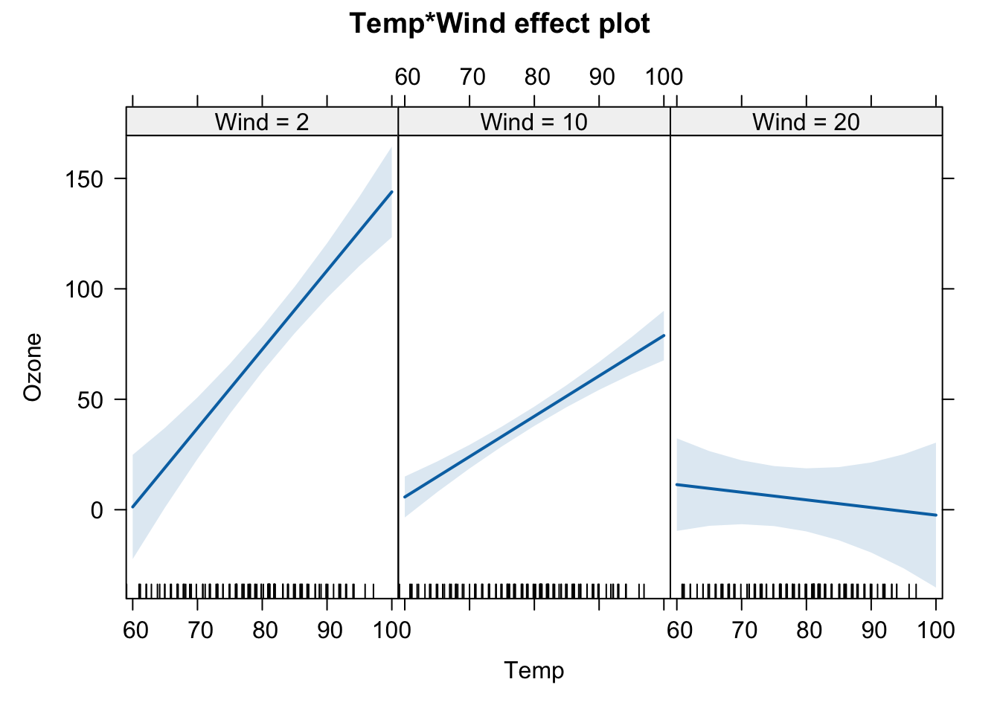
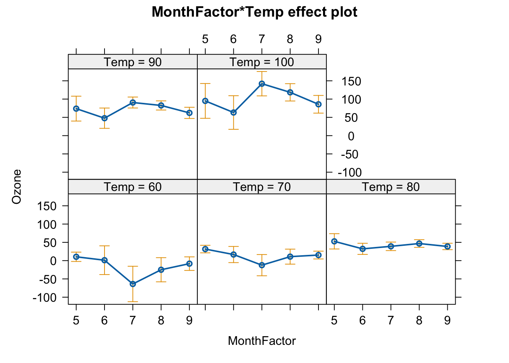

Climate = runif(100)
Temp = Climate + rnorm(100, sd = 0.2)
Growth = 0.5*Temp - 1.0*Climate + rnorm(100, sd = 0.2)9 Multiple regression

We want to understand what happens if there are more variables in the system that also affect the response and maybe also other predictors.
The lm can be then extended to:
\[ y = a_0 + a_1*x_1 + a_2*x_2 \]
This is important because of the omitted variable bias: If there is a confounder which has an effect on the predictor and the response, and we don’t condition the model on it, the effect will be absorbed by the predictor, potentially causing a spurious correlation. Conditioning means that we need to include the variables even though we are not really interested in it! (Those variables are called nuisance parameters.)
In the worst case it can lead to a Simpson’s paradox: An unobserved variable purports the effect of a predictor on the response variable and removes the predictor’s effect or even changes its direction in the opposite direction to the true correlation.
9.1 Confounder
Confounders have effects on the response and another predictor.
Let’s simulate some data about Growth of plants influenced by Climate and Temperature. However, we will make Temperature also depending on Climate to some extent:
Simple linear model of Growth to temperature
summary(lm(Growth~Temp))
##
## Call:
## lm(formula = Growth ~ Temp)
##
## Residuals:
## Min 1Q Median 3Q Max
## -0.55719 -0.18748 -0.01354 0.18858 0.59337
##
## Coefficients:
## Estimate Std. Error t value Pr(>|t|)
## (Intercept) -0.16604 0.04228 -3.927 0.00016 ***
## Temp -0.19311 0.06602 -2.925 0.00428 **
## ---
## Signif. codes: 0 '***' 0.001 '**' 0.01 '*' 0.05 '.' 0.1 ' ' 1
##
## Residual standard error: 0.2472 on 98 degrees of freedom
## Multiple R-squared: 0.0803, Adjusted R-squared: 0.07091
## F-statistic: 8.556 on 1 and 98 DF, p-value: 0.004279Take a look at the effects of temperature and compare with the simulated one. What happened here??
Now, we introduce the Climate variable (our confounder):
summary(lm(Growth~Temp+Climate)) # correct effects!!
##
## Call:
## lm(formula = Growth ~ Temp + Climate)
##
## Residuals:
## Min 1Q Median 3Q Max
## -0.41912 -0.13228 -0.00661 0.12988 0.41630
##
## Coefficients:
## Estimate Std. Error t value Pr(>|t|)
## (Intercept) 0.009234 0.038203 0.242 0.81
## Temp 0.568083 0.102652 5.534 2.66e-07 ***
## Climate -1.088041 0.127964 -8.503 2.27e-13 ***
## ---
## Signif. codes: 0 '***' 0.001 '**' 0.01 '*' 0.05 '.' 0.1 ' ' 1
##
## Residual standard error: 0.1881 on 97 degrees of freedom
## Multiple R-squared: 0.473, Adjusted R-squared: 0.4622
## F-statistic: 43.54 on 2 and 97 DF, p-value: 3.205e-14The effect of temperature is now positive as we have created in the data!
Identifying confounders is the most important challenge in observational studies: For example, several studies showed that overweight adults (BMI) have lower mortality. However, another study shows that these earlier results might have come up due to confounding: smoking!
smokers: higher mortality and lower BMI -> people with lower BMI have higher mortality rates
When we correct for the confounder smoking, the correlation between BMI and mortality goes in the other direction, i.e. obese people have higher mortality!
Confounders can even lead to observed correlations where in reality there is no such correlation. This is called spurious correlation.
Warning
Conclusion: Confounders can cause correlations where no causal relationship exists.
9.2 Multiple LM
Note
A linear regression with a quadratic effect (or any polinomial) of X is a “multiple regression” in the sense that the squared X can be considered another “variable”: \[ y = a_0 + a_1*x_1 + a_2*x_1^2 \]
Multiple linear regression expands simple linear regression to a polynomial of several explanatory variables x1, x2… e.g.: \[ y = a_0 + a_1*x_1 + a_2*x_2 + a_3*x_3 \]
- Idea: if we jointly consider “all” variables in the model formula, the influence of confounding variables is incorporated.
Let’s see an example with the airquality data:
## first remove observations with NA values
newAirquality = airquality[complete.cases(airquality),]
#summary(newAirquality)The simple regression of Ozone with temperature:
# simple regression
m0 = lm(Ozone ~ Temp , data = newAirquality)
summary(m0)
##
## Call:
## lm(formula = Ozone ~ Temp, data = newAirquality)
##
## Residuals:
## Min 1Q Median 3Q Max
## -40.922 -17.459 -0.874 10.444 118.078
##
## Coefficients:
## Estimate Std. Error t value Pr(>|t|)
## (Intercept) -147.6461 18.7553 -7.872 2.76e-12 ***
## Temp 2.4391 0.2393 10.192 < 2e-16 ***
## ---
## Signif. codes: 0 '***' 0.001 '**' 0.01 '*' 0.05 '.' 0.1 ' ' 1
##
## Residual standard error: 23.92 on 109 degrees of freedom
## Multiple R-squared: 0.488, Adjusted R-squared: 0.4833
## F-statistic: 103.9 on 1 and 109 DF, p-value: < 2.2e-16
plot(Ozone ~ Temp , data = newAirquality)
abline(m0, col = "blue", lwd = 3)Including Wind effect:
m1 = lm(Ozone ~ Temp + Wind , data = newAirquality)
summary(m1)
##
## Call:
## lm(formula = Ozone ~ Temp + Wind, data = newAirquality)
##
## Residuals:
## Min 1Q Median 3Q Max
## -42.156 -13.216 -3.123 10.598 98.492
##
## Coefficients:
## Estimate Std. Error t value Pr(>|t|)
## (Intercept) -67.3220 23.6210 -2.850 0.00524 **
## Temp 1.8276 0.2506 7.294 5.29e-11 ***
## Wind -3.2948 0.6711 -4.909 3.26e-06 ***
## ---
## Signif. codes: 0 '***' 0.001 '**' 0.01 '*' 0.05 '.' 0.1 ' ' 1
##
## Residual standard error: 21.73 on 108 degrees of freedom
## Multiple R-squared: 0.5814, Adjusted R-squared: 0.5736
## F-statistic: 74.99 on 2 and 108 DF, p-value: < 2.2e-16To vizualize the effects of each predictor on the ozone, we can use the package effects. The package will plot the effects of each variable separately (plots called partial slopes) controling for (or adjusting for) the other variables in the model. Controling here means that for ploting the effect of Temp, the variable Wind was fixed at it’s average value (the fixed value can be changed by the user, but the default is to take the mean of a continuous variable).
Plotting multiple regression outputs using the package effects:
library(effects)
## Carregando pacotes exigidos: carData
## lattice theme set by effectsTheme()
## See ?effectsTheme for details.
plot(allEffects(m1))A predictor effect plot summarizes the role of a selected focal predictor in a fitted regression model. These graphs are an alternative to tables of fitted coefficients, which can be much harder to interpret than predictor effect plots. (Info taken from the vignette of the effects package, take a look at it!).
Let’s interprete the partial slope plot for Temp. It shows that there is a positive relationship of temperature and Ozone. The shaded blue area.
The intercept of the line affects only the height of the line, and is determined by the choices made for averaging over the fixed predictors, but for any choice of averaging method, the slope of the line would be the same (because the model has no interactions between variables - next topic). The shaded area is a pointwise confidence band for the fitted values, based on standard errors computed from the covariance matrix of the fitted regression coefficients. The rug plot at the bottom of the graph shows the location of the Temp data values.
If we omit Wind will we have a different effect of Temp in Ozone?
## Omitted variable bias
both = lm(Ozone ~ Wind + Temp, newAirquality)
wind = lm(Ozone ~ Wind , newAirquality)
temp = lm(Ozone ~ Temp, newAirquality)
#summary(both)
#summary(wind)
slopes <- data.frame(
predictor = c("Wind", "Temp"),
both.pred = round(coef(both)[2:3], digits = 2),
only.wind = c(round(coef(wind)[2], digits = 2), "NA"),
only.temp = c("NA", round(coef(temp)[2], digits = 2))
)
slopes
## predictor both.pred only.wind only.temp
## Wind Wind -3.29 -5.73 NA
## Temp Temp 1.83 NA 2.44Yes, omitting Wind makes the effect of Temperature larger.
Problem: Multiple regression can separate the effect of collinear explanatory variables, but only, if collinearity is not too strong.
Solution: If the correlation is really strong, we can omit one variable and interpret the remaining collinear variable as representing both.
9.3 Interactions between variables
If one predictor influences the effect of the other predictor, we can include an interaction term into our model:
\[ y \sim a + b + a:b \]
or:
\[ y \sim a*b \]
Let’s include an interaction effect of Wind and Temp to the Ozone model.
Scale your continous variables!
if including interactions, always scale your predictor variables! scale means: subtracts the mean and divides by standard deviation
m2 = lm(Ozone ~ scale(Temp)* scale(Wind) , data = newAirquality)
summary(m2)
##
## Call:
## lm(formula = Ozone ~ scale(Temp) * scale(Wind), data = newAirquality)
##
## Residuals:
## Min 1Q Median 3Q Max
## -40.930 -11.193 -3.034 8.193 97.456
##
## Coefficients:
## Estimate Std. Error t value Pr(>|t|)
## (Intercept) 38.469 2.137 18.002 < 2e-16 ***
## scale(Temp) 17.544 2.239 7.837 3.62e-12 ***
## scale(Wind) -11.758 2.238 -5.253 7.68e-07 ***
## scale(Temp):scale(Wind) -7.367 1.848 -3.987 0.000123 ***
## ---
## Signif. codes: 0 '***' 0.001 '**' 0.01 '*' 0.05 '.' 0.1 ' ' 1
##
## Residual standard error: 20.37 on 107 degrees of freedom
## Multiple R-squared: 0.6355, Adjusted R-squared: 0.6253
## F-statistic: 62.19 on 3 and 107 DF, p-value: < 2.2e-16The influence of temperature on ozone depends on the amount of wind. When wind is low, the relationship is strongly positive, but when wind is high this relationship becomes slightly negative.
plot(allEffects(m2, xlevels=3))
9.3.1 Interactions with categorical variables
How does everything change, if we have factorial predictors?
newAirquality$MonthFactor = factor(newAirquality$Month)
m4 = lm(Ozone ~ MonthFactor * scale(Temp),
data = newAirquality)
summary(m4)
##
## Call:
## lm(formula = Ozone ~ MonthFactor * scale(Temp), data = newAirquality)
##
## Residuals:
## Min 1Q Median 3Q Max
## -41.336 -12.207 -3.703 9.644 117.664
##
## Coefficients:
## Estimate Std. Error t value Pr(>|t|)
## (Intercept) 48.079 9.171 5.242 8.73e-07 ***
## MonthFactor6 -19.301 11.821 -1.633 0.1056
## MonthFactor7 -20.338 11.869 -1.714 0.0897 .
## MonthFactor8 -9.240 11.031 -0.838 0.4042
## MonthFactor9 -14.523 10.075 -1.441 0.1525
## scale(Temp) 20.140 6.691 3.010 0.0033 **
## MonthFactor6:scale(Temp) -5.345 11.702 -0.457 0.6488
## MonthFactor7:scale(Temp) 28.943 11.693 2.475 0.0150 *
## MonthFactor8:scale(Temp) 14.024 9.282 1.511 0.1339
## MonthFactor9:scale(Temp) 2.266 8.194 0.277 0.7827
## ---
## Signif. codes: 0 '***' 0.001 '**' 0.01 '*' 0.05 '.' 0.1 ' ' 1
##
## Residual standard error: 22.33 on 101 degrees of freedom
## Multiple R-squared: 0.5864, Adjusted R-squared: 0.5495
## F-statistic: 15.91 on 9 and 101 DF, p-value: 6.476e-16
plot(allEffects(m4))
## Warning in Analyze.model(focal.predictors, mod, xlevels, default.levels, : the
## predictor scale(Temp) is a one-column matrix that was converted to a vector
9.4 Sequential (type I) ANOVA
Let’s take our old model with an interaction term between temperature and wind:
m2 = lm(Ozone ~ scale(Temp)* scale(Wind) , data = newAirquality)
summary(m2)
##
## Call:
## lm(formula = Ozone ~ scale(Temp) * scale(Wind), data = newAirquality)
##
## Residuals:
## Min 1Q Median 3Q Max
## -40.930 -11.193 -3.034 8.193 97.456
##
## Coefficients:
## Estimate Std. Error t value Pr(>|t|)
## (Intercept) 38.469 2.137 18.002 < 2e-16 ***
## scale(Temp) 17.544 2.239 7.837 3.62e-12 ***
## scale(Wind) -11.758 2.238 -5.253 7.68e-07 ***
## scale(Temp):scale(Wind) -7.367 1.848 -3.987 0.000123 ***
## ---
## Signif. codes: 0 '***' 0.001 '**' 0.01 '*' 0.05 '.' 0.1 ' ' 1
##
## Residual standard error: 20.37 on 107 degrees of freedom
## Multiple R-squared: 0.6355, Adjusted R-squared: 0.6253
## F-statistic: 62.19 on 3 and 107 DF, p-value: < 2.2e-16The total adjusted R² of the model is 0.63, which is better than the model that only included Temp as a predictor (0.48). However, we might be interested in knowing how much each predictor contributes to the model. This is where ANOVA comes in.
An ANOVA (Analysis of Variance), or more specifically a sequential (type I) ANOVA, evaluates how the model’s explanatory power increases as we add predictors one at a time. It allows us to assess the incremental contribution of each variable, in the order they are added.
Let’s run a type I ANOVA for m2
anova(m2)
## Analysis of Variance Table
##
## Response: Ozone
## Df Sum Sq Mean Sq F value Pr(>F)
## scale(Temp) 1 59434 59434 143.251 < 2.2e-16 ***
## scale(Wind) 1 11378 11378 27.425 8.231e-07 ***
## scale(Temp):scale(Wind) 1 6595 6595 15.895 0.0001227 ***
## Residuals 107 44394 415
## ---
## Signif. codes: 0 '***' 0.001 '**' 0.01 '*' 0.05 '.' 0.1 ' ' 1This output shows the reduction in residual sum of squares as each term is added to the model. Importantly, because this is sequential, the order of variables matters: the second variable is evaluated after accounting for the first, and so on.
Note
As the name type I suggests, there are also other (non-sequential) types of ANOVA. More on this in the Advanced Regression Model lecture notes here.
9.5 Model selection
Model selection is a controversial and nuanced area of statistics. The criteria you use depend heavily on your goal: are you trying to explain relationships (inference) or make accurate predictions?
Here, we will briefly present two commonly used tools for model selection: the already mentioned anova function and the Akaike Information Criterion (AIC).
Let’s return to our airquality dataset and fit four increasingly complex models:
m0 = lm(Ozone ~ 1 , data = newAirquality)
m1 = lm(Ozone ~ Temp , data = newAirquality)
m2 = lm(Ozone ~ Wind , data = newAirquality)
m3 = lm(Ozone ~ Temp + Wind , data = newAirquality)We can compare the nested models (one is the smaller version of the other) with the anova:
anova(m0, m1, m3)
## Analysis of Variance Table
##
## Model 1: Ozone ~ 1
## Model 2: Ozone ~ Temp
## Model 3: Ozone ~ Temp + Wind
## Res.Df RSS Df Sum of Sq F Pr(>F)
## 1 110 121802
## 2 109 62367 1 59434 125.888 < 2.2e-16 ***
## 3 108 50989 1 11378 24.101 3.262e-06 ***
## ---
## Signif. codes: 0 '***' 0.001 '**' 0.01 '*' 0.05 '.' 0.1 ' ' 1This tells us whether each added variable significantly improves the model. However, we cannot use ANOVA to compare non-nested models — i.e., models that include different predictors but are not subsets of one another:
anova(m1, m2) # This doesn't make sense: models are not nested
## Analysis of Variance Table
##
## Model 1: Ozone ~ Temp
## Model 2: Ozone ~ Wind
## Res.Df RSS Df Sum of Sq F Pr(>F)
## 1 109 62367
## 2 109 76108 0 -13740To compare models regardless of nesting, we can use AIC (Akaike Information Criterion). Lower AIC values indicate better trade-off between goodness-of-fit and model complexity:
AIC(m0, m1, m2,m3)
## df AIC
## m0 2 1096.073
## m1 3 1023.775
## m2 3 1045.876
## m3 4 1003.416This allows us to compare all models side by side and select the one that balances fit and parsimony.
9.6 Formula syntax
| Formula | Meaning | Details |
|---|---|---|
y~x_1 |
\(y=a_0 +a_1*x_1\) | Slope+Intercept |
y~x_1 - 1 |
\(y=a_1*x_1\) | Slope, no intercept |
y~I(x_1^2) |
\(y=a_0 + a_1*(x_1^2)\) | Quadratic effect |
y~x_1+x_2 |
\(y=a_0+a_1*x_1+a_2*x_2\) | Multiple linear regression (two variables) |
y~x_1:x_2 |
\(y=a_0+a_1*(x_1*x_2)\) | Interaction between x1 and x2 |
y~x_1*x_2 |
\(y=a_0+a_1*(x_1*x_2)+a_2*x_1+a_3*x_2\) | Interaction and main effects |